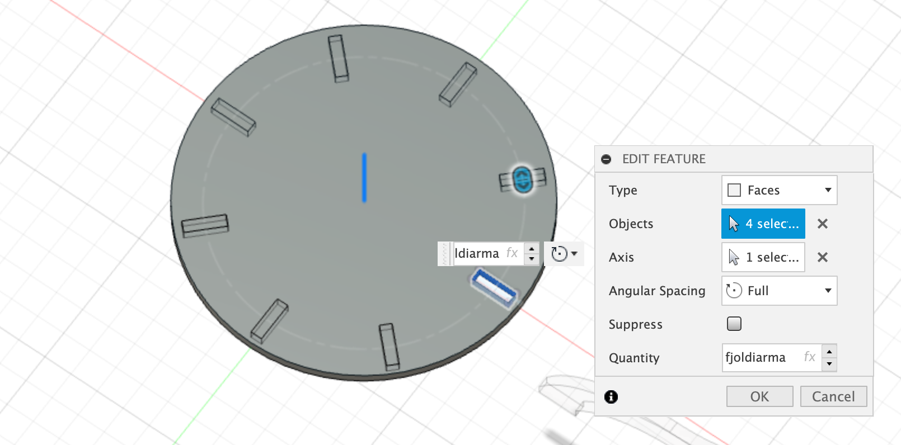
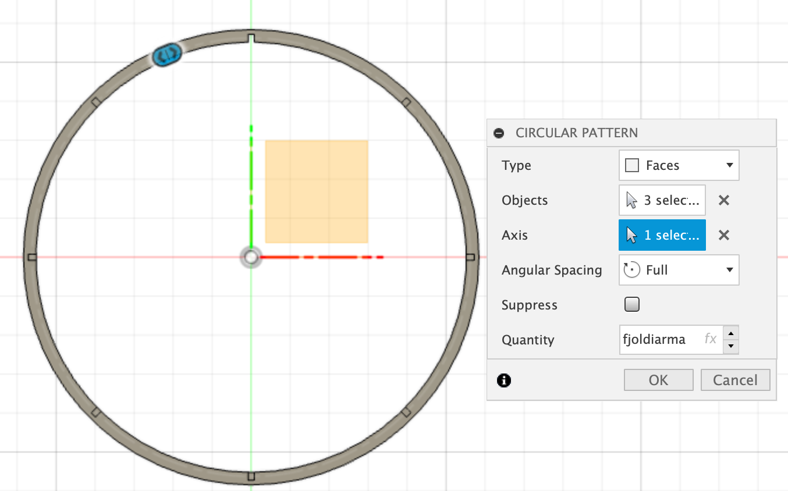
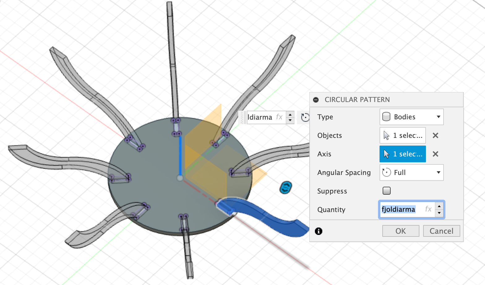
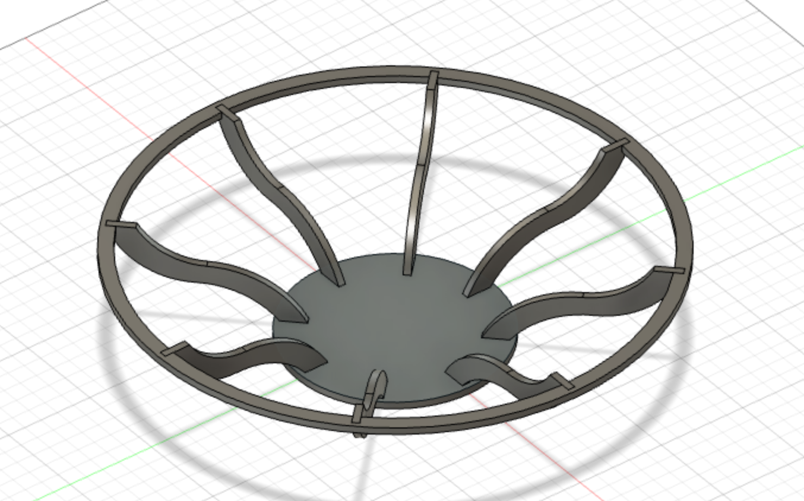
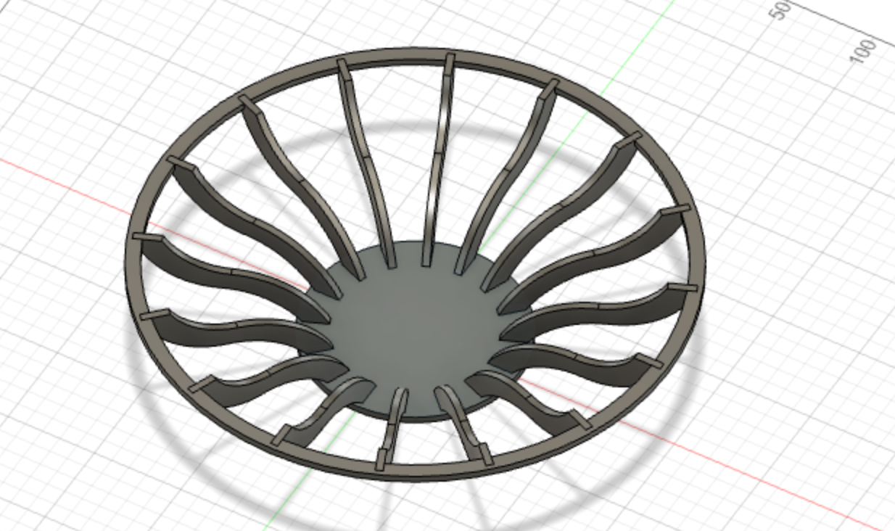

Verkefni 2
Tölvustuddur skurður
Þetta verkefni gekk út á að hanna hlut til að búa til í geislaskera sem hægt er að smella saman án þess að nota lím. Hönnunin átti að vera útfærð þannig að hægt væri að skala ýmsar stærðir hennar eftir hentugleika hverju sinni, eins og efnisþykkt, lengdir og breiddir.
Hönnunin
Hugmyndin mín var að búa til skál undir ávexti. Fyrirmyndin eru einskonar grindaskálar sem síðan er hægt að vefa utan um með garni svipað og á myndinni fyrir neðan.

Hönnunin samanstendur af botnplötu, örmum og stuðningshring fyrir armana. Armarnir smella þá í botnplötuna og á innanverðum stuðningshringnum eru rifur sem armarnir hvíla í. Til að teikna armana notaði ég spline tólið. Hönnunarkrafa í verkefninu var að það væri hægt að breyta einhverjum parametrum. Hér að neðan má sjá stærðirnar sem ég skilgreindi og notaði í teikningunni:
Vert er að taka fram að löguninni á örmunum er ekki hægt að breyta og því þarf að vera föst fjarlægð milli enda botnplötunnar og stuðningshringsins og tryggi ég það með stærðarbreytunum. Hinsvegar stenst það ekki þegar offset, fjarlægð pressfit rifu fyrir arma á botnplötu frá kantinum, er breytt. Það er því ekki hægt að breyta offset. Hægt væri að setja upp parametrana þannig að það væri hægt en ég áttaði mig ekki á mistökunum fyrr en eftir á. Hér má sjá hvernig ég notaði parametra fyrir fjölda arma, en til að gera það teiknaði ég eina rifu á stuðningshringinn og eina rifu á botnplötuna og notaði circular pattern á yfirborðin á rifunum og notaði breytuna fjoldiarma. Ég gerði það sama með armana þ.e. byrjaði með einn arm og fjölgaði þeim með circular pattern. Þegar ég prófaði að breyta parametrum eins og radíus botnsins sá ég að rifurnar fyrir armana sem voru búnar til með circular pattern færðust ekki með heldur bara upprunalega gatið. Ég fann ekki leið til að laga það en til að komast hjá því í teikningunni minni er hægt að byrja með eina rifu á botnplötu og ákvarða botnradíus áður en circular pattern er notað til að fjölga götunum og örmunum.
  
Ég valdi að hafa átta arma því ég sá fyrir mér að það kæmi vel út með garni og gefur átthyrningamunstur. Ef þeim er fjölgað mikið meira væri hún meira hringlótt. Hér má sjá samanburð á skálum með 8 og 16 örmum:
 
Undirbúningur fyrir geislaskurð
Til að undirbúa hönnunina fyrir geislaskurðinn fylgdi ég fyrirmælunum í eftirfarandi myndbandi útveguðum af kennara. Myndbandið sýnir ítarlega hvað þarf að gera í Fusion 360 til að undirbúa skrána fyrir Inkscape og gera skrána svo tilbúna í geislaskurð.
Lokaútkoman
Geislaskurðurinn gekk vel og hönnunin passaði saman en ef ég ætlaði að búa hana til aftur og bæta þá myndi ég gera stuðningshringinn nokkrum millimetrum þrengri til að búa til meiri spennu og gera hana stöðugri. Pressfittið virkar þó nægilega vel og garnið mun líka hjálpa til þegar það er komið á. Ég er ánægð með útkomuna og hlakka til að dunda mér við að bæta garninu við á hana þegar ég hef frítíma. Þangað til læt ég duga að setja lítinn dúk í skálina sem hentar þá vel undir meðalstóra ávexti eins og epli og banana. Þetta er í fyrsta skipti sem ég hanna og teikna með breytilegum parametrum og ég lærði mikið af þessu verkefni. Þessi hönnun hafði margar breytur sem tengjast saman og ég þurfti oft að vinna mig til baka til að laga parametra og sumt tókst mér ekki að laga. Ef ég þyrfti að gera svona verkefni aftur myndi ég skilgreina alla parametra áður en ég byrja að teikna í hugbúnaði þ.e. ekki jafnóðum.
Hér má hlaða niður teikningunni:
Download ZIP
Vínylskeri
Annar hluti verkefnisins var að nota vínylskera til að skera út límmiða. Ég valdi að gera límmiða úr útlínum af Íslandi og fann þessa mynd á netinu til að vinna með:
Næst opnaði ég myndina í Inkscape þar sem þarf að vinna myndina aðeins áður en hún fer í vínylskerann. Þar þarf að velja Trace Bitmap sem breytir t.d. .png og .jpg skrám sem eru pixlaðar í vector graphic mynd þ.e. mynd úr línum/vigrum. Svo þarf að breyta Fill and Strokes stillingum og þá er myndin tilbúin í prentun. Efnið sem er notað í vínylskeranum er mjög þunnt og að nota límband þett yfir allan límmiðann auðveldar það að ná honum af og líma hann sléttan á annað yfirborð. Ég á eftir að ákveða hvar ég vil nota límmiðann minn en hér má sjá hann tilbúinn í notkun:
Tímatafla
| Verkhlutar | Klukkustundir |
|---|---|
| Undirbúningur | 2 |
| Teikning | 5 |
| Fablab | 1 |
| Vínylskeri | 1 |
| Heimasíða | 5 |
| Alls | 14 |